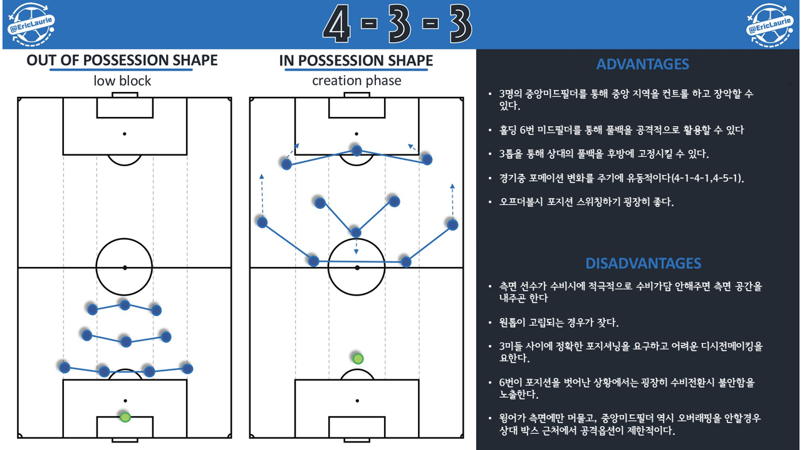

- # 3-4-3
- # 3-5-2
- # 4-2-2-2
- # 4-2-3-1
- # 4-3-3
- # 4-4-2
- # 4-diamond-2
#4-3-3
- 측면 공격수, 중앙 미드필더, 측면 수비수가 체인을 이루어 측면에서의 수적 우위를 확보하기 쉽다. 연계 플레이가 발생하기 쉽다.3미드필더, 미드필더와 측면 수비수, 윙어, 중앙 공격수 간에 트라이앵글을 형성하기 쉽다. 즉 패싱게임이 잘 이루어질 수 있다.
- 4-4-2와 비교해서 중앙 미드필더에 대한 수적 우위를 확보하기 쉽다.
- 경기장에 전체에 넓게 인원을 배치하는 포메이션으로, 전체적인 밸런스를 확보하기 쉽다.
- 인원 배치상 미드필드의 사이드쪽이 비는지라 수비시에는 필연적으로 측면 공격수를 밑으로 내린 4-5-1, 4-1-4-1 같은 포메이션이 된다.
- 때문에 측면 공격수가 굉장히 중요한 전술적 위치를 가지게 된다. 공, 수 모두 많은 역할이 부여되고, 기술적 능력, 스피드, 많은 운동량이 이를 위해서 필요하다. 따라서 일류 윙어는 비싸다.
- 윙어의 능력이 떨어지면 자연적으로 4-5-1화가 되어 수비적인 전술로 변질돼 버린다.
- 반대로 윙어가 지나치게 공격적이면 타 필드 플레이어의 수비적 부담이 급격히 증가하고 밸런스가 파괴되기 쉽다. 때문에 각각 측면 공격수인 메시와 호날두를 팀 에이스로 보유하고 있던 레알과 바르샤는 수비시 이들을 공격진에 남겨둔채 4-4-2에 가까운 포메이션을 보여주기도 했다.
- 선수들의 전술적 이해도를 매우 많이 요구한다.[13] 실제로, 433을 주포메이션으로 활용하는 팀들은 대부분 리그를 지배하는 팀인 경우가 많다.
- 사이드를 돌파하는 클래식 윙어들이 별로 활약하기 어렵다. 70년대식 4-3-3은 직선 돌파형 윙어 밖에 없었다. 리오넬 메시나 크리스티아누 호날두 같은 선수들은 윙어지만 중앙 침투를 통해 적극적인 득점을 시도하는 변칙적 윙어로 유명한 윙어이다. 팀별로 전술적인 다양성을 위해서 클래식 윙어를 보유하는 경우는 있지만 클래식 윙어로 윙어 2명을 배치하면 전술적으로 경직된 결과가 나오는 경우가 많다. 외국 중계를 보면, 433이나 343에서의 전방의 3명을 스트라이커라고 부르는 경우가 많다. 그만큼 득점에 대해서 책임질 필요가 있는 포지션이라는 것.
참조: Eric Laurie의 트위터
